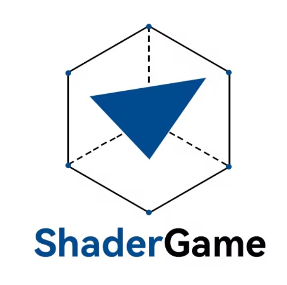

A collection in the making.
Play through 50 levels, unlock the next challenge, and aim for up to three stars. Each timed puzzle you complete adds a new artwork to your gallery.
关卡模式：逐关解锁，在限时挑战中收集作品。

INDEPENDENT GAME STUDIO
A little logic. A different perspective.
Meet ArtSudoku, where a puzzle becomes a piece of art in VR.
用想象力，创造游戏的另一种可能。
Discover ArtSudoku01 / OUR FIRST GAME
艺术数独 · 在 VR 中，让逻辑拼成艺术。
Step inside a familiar puzzle. Pick up numbered blocks, find their place on the board, and watch your completed Sudoku transform into a piece of artwork you can hold.
Explore 4×4, 9×9, and 16×16 boards, work through timed levels, or make a puzzle from your own image. This is Sudoku with a little more room for imagination.
拿起数字方块，完成数独，收获可以近距离欣赏的作品。从关卡挑战到自定义图片，用自己的节奏探索数字与图像的乐趣。
Find your way to playTHREE WAYS TO PLAY / 三种玩法
Follow the levels, create something personal, or return for a shared weekly puzzle.
Play through 50 levels, unlock the next challenge, and aim for up to three stars. Each timed puzzle you complete adds a new artwork to your gallery.
关卡模式：逐关解锁，在限时挑战中收集作品。
Choose a local image or an artwork unlocked from levels. Set the board size, number of empty cells, and puzzle seed, then solve without a countdown. Save an unfinished puzzle and come back later.
沙盒模式：导入图片，自定义棋盘，不必赶时间。
Download the current week’s challenge, solve to reveal its hidden artwork, and improve your personal best. Compare completion times on your platform’s leaderboard.
The week changes Monday at 00:00 UTC. Online content and rankings require platform services.
FROM NUMBERS TO ART / 如何游玩
Classic Sudoku rules, with blocks you can pick up and place. Use controllers, or tracked hands on supported devices.
Start a level, build a sandbox puzzle, or open the weekly challenge. Board sizes range from compact 4×4 puzzles to 16×16 grids.
Grab a numbered block and place it in an empty slot. Fill every row, column, and smaller box without repeating a number.
Complete the board and the numbers fade into artwork. Finished level artworks join your collection in the showroom.
MAKE IT YOURS / 你的游戏空间
换一种材质，换一处风景，或走进展厅回顾你的解谜旅程。
Visit your showroom to pick up and inspect artwork earned in level mode. Browse your collection by board size, best score, or fastest time.
Choose from four environments and wood, jade, or marble blocks. Adjust audio levels, switch between English and Chinese, or enable passthrough on supported devices.
GOOD TO KNOW / 常见问题
ArtSudoku targets Meta Quest and PICO VR platforms using OpenXR. Hand tracking and passthrough depend on device support. For current availability or device-specific questions, contact SYM829@163.com.
Yes. Sandbox mode lets you select an image from your device or reuse an artwork unlocked through regular levels. You can customize the board size, empty-cell count, and seed. Sandbox has no countdown, and unfinished puzzles can be saved locally.
The weekly challenge follows a Monday 00:00 UTC reset. Downloading content and using rankings require an internet connection and the relevant platform services. Meta Quest and PICO have separate leaderboards, not a shared cross-platform ranking.
Your first leaderboard submission of the week is free; additional submissions require an in-app purchase. Replaying the downloaded challenge and improving your local best do not require buying another submission. The weekly timer continues while the app is in the background, and online results must be submitted before the week ends.
The showroom collects artworks earned by completing regular levels. Sandbox creations and weekly challenge artwork are not added to this level collection.
Email SYM829@163.com with your platform, game version, and a description of the issue. Avoid sending private images or account credentials. See our privacy policy for information about data and privacy requests.
THE STUDIO / 工作室
ShaderGame is a game studio with a simple ambition: create imaginative games. ArtSudoku is our first chapter, bringing logic and art into a space you can explore.
ShaderGame 是一家游戏工作室。我们从艺术数独 ArtSudoku 出发，用好奇心与想象力探索游戏的可能。
GET IN TOUCH / 联系我们
Game questions, feedback, or privacy requests.